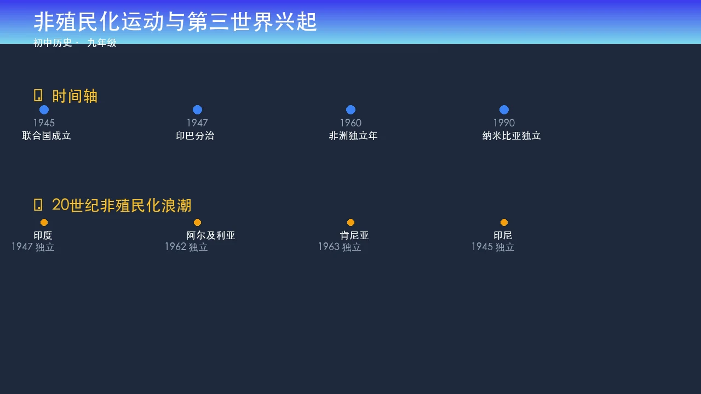

与二战冲击
印度·越南·朝鲜
拉美革命浪潮
殖民体系的建立与危机
19世纪末，欧洲列强凭借工业革命积累的军事与经济优势，在亚非拉地区建立起庞大的殖民体系。殖民统治以武力镇压、经济掠夺和文化同化为三大支柱，将殖民地变为原料产地和商品销售市场。二战使宗主国元气大伤，国际社会人权意识崛起，被殖民地人民的民族意识觉醒，殖民体系的合法性与稳定性均遭受根本性冲击，为大规模独立运动奠定了历史条件。
💡 颜色深浅代表独立时间早晚，非洲1960年代（绿色区域）独立国家最为集中，1960年被称为"非洲独立年"。
殖民体系在二战后崩溃的最根本原因是什么？
亚洲的民族独立
亚洲民族独立运动在二战后迅速展开，呈现出多元路径：印度通过甘地领导的非暴力不合作运动向英国施压，于1947年实现独立但同时分裂为印巴两国；越南人民在胡志明领导下，经过奠边府战役（1954年）击败法国殖民军，赢得北部独立；朝鲜半岛在二战结束后摆脱日本殖民统治，但随即因冷战格局分裂为南北两部。1955年万隆会议凝聚亚非29国力量，标志着第三世界力量的崛起。
阅读以下两则史料，思考：同一历史事件，为何呈现出截然不同的叙述？
"印度在英国的统治下获得了现代文明的恩赐——铁路、电报、法律体系与现代教育。 独立固然不可避免，但我们深感忧虑：缺乏统一治理经验的印度，能否在宗派冲突中维持秩序？ 分治方案是防止内乱的唯一务实选择。"
"英国用我们自己的盐税、棉布税压榨我们的骨血，却美其名曰'秩序与文明'。 真正的文明不需要枪炮来维持。今天，我们以非暴力拒绝服从不公正的法律， 因为沉默即是共谋，自由的代价必须由我们自己支付。"
📌 史学方法提示
历史叙述受叙述者立场影响。殖民者强调"文明使命"与实际利益；被殖民者强调尊严、自由与反抗权利。 阅读史料时应识别叙述者身份，分析其动机，并寻找多方来源加以印证。
越南抗法独立运动与印度独立运动的最主要区别在于：
🌟 拓展思考：为什么两国选择了不同的斗争方式？试从宗主国态度、殖民地社会结构等方面分析。
非洲独立年与拉美革命
1960年，非洲共有17个国家宣布独立，史称"非洲独立年"，标志着非洲去殖民化运动进入高潮。 在此背景下，撒哈拉以南非洲的独立运动如燃原之火，加速瓦解了欧洲殖民体系。 与此同时，拉丁美洲革命浪潮兴起，1959年古巴革命成功，卡斯特罗领导的起义军推翻亲美独裁政权， 建立社会主义政府，成为美洲反帝反霸运动的重要里程碑，深刻影响了拉美各国民族解放运动的走向。
💡 共17国，多为法属殖民地，少数为英属，集中宣布独立是历史性的集体觉醒与反抗行动。
革命背景
- 巴蒂斯塔亲美独裁政权腐败横行
- 糖业经济高度依附美国资本
- 大量农民失地，贫富悬殊
- 民族主义与社会主义思潮交汇
革命意义
- 美洲第一个社会主义国家诞生
- 打破了美国"后院"神话
- 激励拉美各国民族解放斗争
- 冷战背景下成为美苏博弈焦点（古巴导弹危机1962）
请将以下亚非拉独立运动关键事件按时间顺序从上到下排列（拖拽调整）：
"历史证明，一个民族的自由不能作为礼物被赐予，它只能通过斗争赢得。斗争的形式可以不同——武装的或非武装的，但反抗不公正统治的意志，是推动历史进步的根本力量。"
结合亚非拉民族解放运动的史实，你如何评价这段话？请从一个具体案例（印度、越南或古巴）出发，论证你的观点。
亚非拉民族解放运动是20世纪最深刻的历史变革之一，数十亿人获得自由，改写了世界政治版图。
- 被压迫人民民族意识觉醒
- 长期反抗斗争积累的力量
- 二战削弱宗主国实力
- 殖民体系走向崩溃
- 第三世界力量兴起
- 推动国际政治民主化
- 印度（非暴力）1947
- 越南（武装）1954
- 古巴革命 1959
- 非洲独立年 1960
- 多视角解读史料
- 识别叙述者立场
- 寻找多方史料印证
